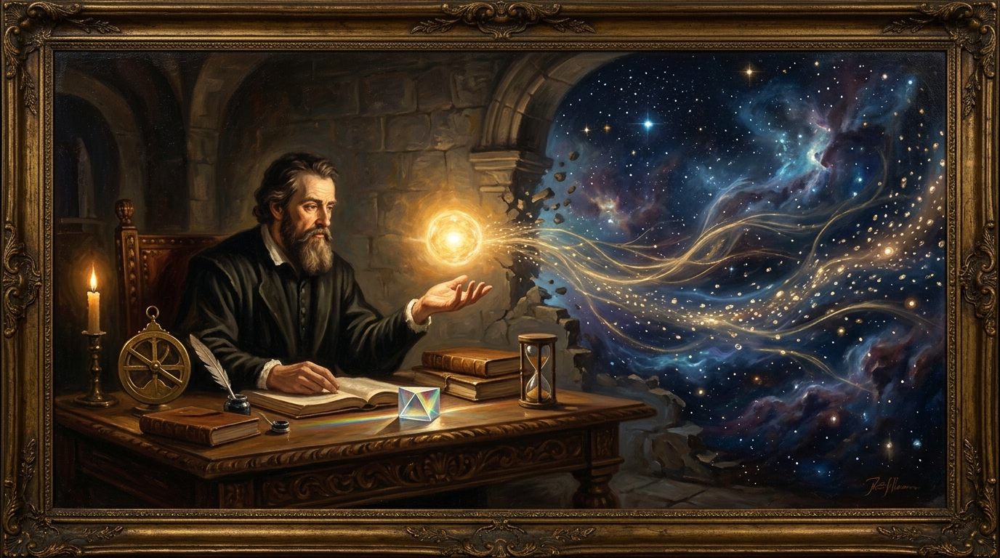

Examining Consciousness.
An Inquiry into the Nature, Origin, and Eternity of Awareness: The Hard Problem of Matter, Non-Emergent Models, and the Ground of Being.

“Consciousness doesn’t come from matter — matter comes from consciousness... God does not have consciousness — God is consciousness. Creation is an expression of consciousness.” — Trevor Swistchew
Philosophical Dossier: The Origin & Primacy of Consciousness
The Explanatory Gap, Non-Emergent Metaphysics, and the Deduction of the Ground of BeingWhy Materialism Cannot Derive Awareness from Matter
Swistchew identifies why conventional physicalism stalls at an explanatory impasse: neuroscience tracks neural correlates (NCCs), but cannot bridge the 'Hard Problem' (David Chalmers) of why subjective phenomenal experience exists at all. Emergent theories merely push the mystery back one step. When consciousness is recognized as an uncreated, intrinsic primitive—like mass, charge, or the laws of logic—the search for a temporal starting point dissolves as a category mistake.
No one has ever explained the origin of consciousness. This suggests it is eternal, as there is no starting point known to man.[1] The idea that consciousness might be eternal arises because every attempt to pinpoint a definitive “starting point” runs into conceptual dead ends. It doesn’t mean the question is unanswerable — it means we’re still missing pieces.
Here’s a clearer way to frame the landscape:
Science has no confirmed starting point for consciousness
Neuroscience can describe how conscious states correlate with brain activity, but it cannot yet explain:[1]
- Why subjective experience exists at all
- When consciousness first emerged in evolution
- Whether consciousness is a product of matter or something more fundamental
This gap is what fuels the idea that consciousness might not have a beginning in the conventional sense.
Several theories actually allow for an “eternal” consciousness — not in a mystical sense, but in a structural, metaphysical, or physical sense:[2]
Suggests consciousness is a fundamental property of the universe, like mass or charge.[2] If true, consciousness didn’t “start” — it was always part of reality.
Proposes that consciousness is primary and matter emerges from it.[6] In this view, consciousness is not created — it is the ground of existence.
Some interpretations of quantum mechanics imply that observation or awareness is woven into the very fabric of physical reality.[6]
The universe itself is conscious, and individual minds are fragments of a larger whole — like the ocean is comprised of billions of globules of water. Consciousness is as old as the cosmos.
Biological theories don’t solve the “origin” problem either. Even if consciousness emerged from complex brains: When did it first appear? Why did it appear? How does matter produce subjective experience? None of these have definitive answers. So even the scientific “emergent” view doesn’t give a starting point — it just pushes the mystery back a step.
The absence of a known starting point doesn’t prove eternity — but it keeps the door wide open
It simply means:
- We don’t know.
- We may not yet have the conceptual tools to know.
- Consciousness might not fit neatly into time-bound categories like “beginning” and “end.”
- It could be a fundamental feature of reality — a process that emerges repeatedly, or something outside linear time, or something we haven’t conceptualized yet.
The Ontological Category
“The real issue: consciousness might not be the kind of thing that has a beginning. Some phenomena — like numbers, logic, or the laws of physics — don’t 'start.' They just are. Consciousness might belong to that category.”
If a Deity created everything, it infers that the Deity incorporated its creation with its own nature — and that nature is consciousness itself.
If a deity creates everything, then nothing can exist outside that deity’s nature.[3] This is simple logic. A cause can only produce effects that flow from its own nature. If a deity is the ultimate cause, then everything that exists must in some way reflect or participate in that nature — otherwise the deity would be creating something from properties it does not possess, which is incoherent.
If the deity is conscious, then consciousness must be woven into creation. This follows naturally: if the source is conscious and created all things, then consciousness is not an accidental byproduct — it is a fundamental ingredient.
This is exactly the reasoning behind:
In all these systems, consciousness is not something that emerges — it is something that is.
This leads to a profound idea: consciousness is not created — it is fundamental. If consciousness is part of the deity’s nature, and the deity is eternal, then:
- Consciousness has no beginning.
- Consciousness is not contingent.
- Consciousness is the ground of being.
This is why traditions say:
“God does not have consciousness — God is consciousness.”
“Creation is an expression of consciousness.”
The Ontological Reversal
“Consciousness doesn’t come from matter — matter comes from consciousness.”
This view avoids the “origin of consciousness” problem entirely. Materialist explanations struggle because they try to derive consciousness from non-conscious matter.
This aligns with idealism, cosmopsychism, mystical traditions, plus interpretations of quantum theory.[6]
It also explains why no one has found a “starting point” for consciousness — because there isn’t one.
© 2026 Trevor Swistchew. All rights reserved.